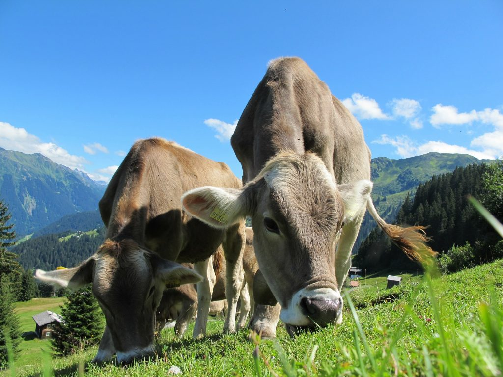
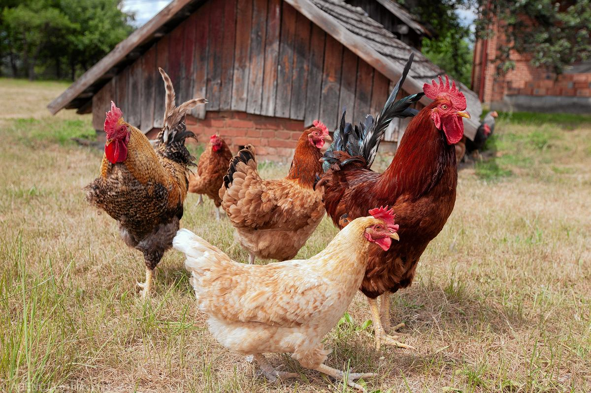
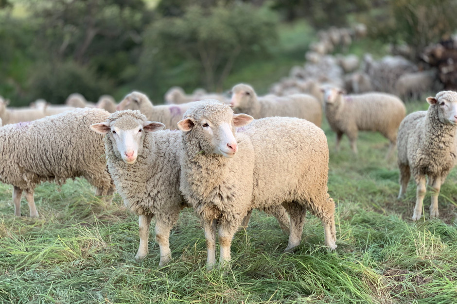

| Bydło |
Zwane również rogacizną, składa się z wielu różnych ras.
W Polsce często widuje się łaciate bydło rasy Holsztyno-Fryzyjskiej.
Zwierzęta te hoduje się na mięso i mleko. |
 |
| Drób |
Udomowione ptaki hodowane ze względu na mięso, jaja, pióra, skóry (strusia skóra), nawóz.
Do drobiu zalicza się między innymi kury, gęsi , indyki, kaczki, perlice, gołębie,
utrzymywane w warunkach fermowych strusie afrykańskie, przepiórki japońskie |
 |
| Świnie |
Świnie tradycyjnie hodowane są na mięso.
Wykorzystywane jest także ich tłuszcz – jako smalec.
Wykorzystywana jest także skóra świńska do wyrobów galanteryjnych –
głównie torebek Świnie pomagają także w odszukiwaniu trufli – cennych grzybów rosnących pod ziemią. |
 |
| Owce |
Owce to zwierzęta stadne karmione głównie trawą. Wykorzystuje się je przede wszystkim do produkcji wełny.
Wykorzystuje się także baraninę – mięso owiec. Coraz popularniejsze jest także mleko owcze,
z którego też produkuje się sery. |
 |
| Kozy |
Koza to jedno z najstarszych udomowionych zwierząt. Wykorzystuje się ją głównie w celu produkcji mięsa i mleka.
Wykorzystywana jest także skóra kozia. Produkuje się z niej safian wykorzystywany do produkcji butów czy opraw książek.
Ze skóry koźlej zaś produkuje się jedną z najlepszych wełen na świecie – kaszmir. |
 |